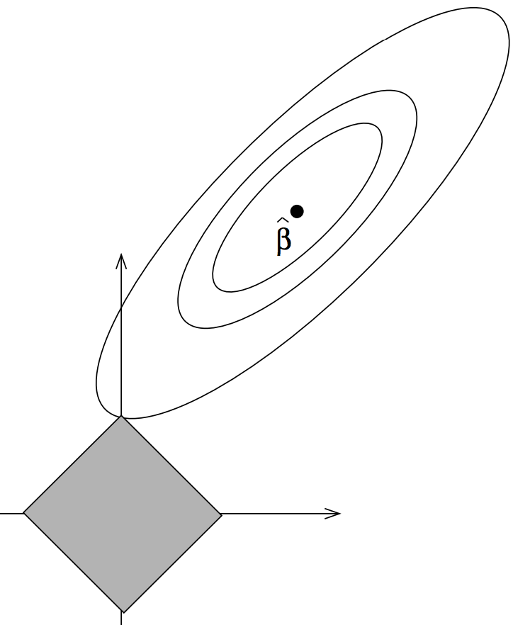
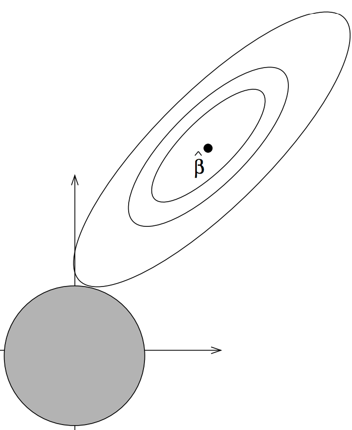

(Terence teaches in University of San Francisco's MS in Data Science program. You might know Terence as the creator of the ANTLR parser generator.)
I am a computer scientist retooling as a machine learning droid and have found the nomenclature used by statisticians to be peculiar to say the least, so I thought I'd put this document together. It's meant as good-natured teasing of my friends who are statisticians, but it might actually be useful to other computer scientists. I look forward to a corresponding document written by the statisticians about computer science terms!
| What a statistician says ... | What they mean ... |
|---|---|
| Nonparametric | Hugely parametric (i.e., lots of parameters); parametric methods have a fixed number of parameters, such as a linear model, but nonparametric methods have an arbitrary number like a random forest. |
| Significant | Statistically distinguishable but indicating nothing concerning the magnitude of the difference. For example, the effect of a drug on patients might be statistically significantly different from the control group that got a placebo. But, that says nothing about how big the effect of the drug was on patients. |
| Type I, Type II errors | Type I error is a false positive and Type II error is false negative. In hypothesis testing, there is a null hypothesis (the "control") and an alternate hypothesis. The null hypothesis could be "drug doesn't cure disease" and the alternative hypothesis could be "drug does cure disease." Type I error is a false positive, a rejection of the null hypothesis to conclude the drug works when, in fact, it does not work. A Type II error is a false negative where we do not reject the null hypothesis in favor of the alternative hypothesis but, in fact, the drug does work. |
| Dependent or response variable | Target or predicted variable usually called y. |
| Independent variables | Features or explanatory variables. |
| Design matrix | Matrix of feature vectors usually called X. |
| Regression | Line or curve fitting through (X, y) training data. As a general term, this means predicting a numeric value rather than a class like a classifier. |
| Logistic regression | This name totally makes sense because it simply runs the output of a regression through a sigmoid (logistic) function. The problem is that we use logistic regression for classification not regression, as the name implies. Logistic regressors actually yield the probability of seeing a specific class; a decision rule on top of that decides between the two classes. |
| Shrinkage | Model parameter regularization. Constrain model parameters to "sane" values in an effort to improve generality. Not a reference to the Seinfeld show. |
| Lasso regularization | L1 regularization. Regularization trades a bit of model accuracy for improved generalization and works by constraining the size of model parameters to "reasonable" values. L1 regularization constrains coefficients to a diamond shaped hyper volume by adding an L1 norm penalty term to the linear model loss function. The term LASSO means "Least absolute Shrinkage and Selection Operator" from the original Tibshirani paper. The LASSO name is perfectly fine except for the fact that the constraint region has lots of pointy discontinuities and looks like it should be called "ridge regularization" from the shape. (Naturally, ridge regularization's constraint region looks like a lasso. haha.)  |
| Ridge regression | L2 regularization. Regularization trades a bit of model accuracy for improved generalization and works by constraining the size of model parameters to "reasonable" values. L2 regularization constrains coefficients to a spherical hyper volume by adding an L2 norm penalty term to the linear model loss function. The term Ridge from the original Hoerl and Kennard Ridge paper was taken from the "ridge traces" on their coefficient plots. Unfortunately, the ridge constraint region looks like a lasso and the lasso constraint region looks like a ridge.  |
| ROC (Receiver operating characteristic) curve | A graph of true positive vs false positive rates. According to Wikipedia, ROC is a term used by electrical engineers in World War II. (Warning: the AUC, area under the curve, of these ROC curves are used all over the place, but are inappropriate for highly unbalanced data sets.) |
| Bias-variance | The trade-off between model accuracy and generality is often called the bias-variance trade-off. Bias is a good term related to accuracy but variance is completely ambiguous and a crappy term for "overfit" or "generality". Not sure why somebody decided variance was a good term when we already have perfectly good terms that are more specific and less overloaded. |
| Sensitivity and specificity | In binary classification problems, these terrible terms simply mean true positive and true negative rates. (Recall is a much better term for sensitivity, by the way, if the more obvious true positive term doesn't work for you.) |
| Model selection | Feature or variable selection. The term "model" appears to be ambiguous because statisticians describe random forests and linear regressors as models, but also, say, two linear models with different explanatory variables. I'm not sure why "variable selection" did not occur to anyone. Maybe it's because statisticians are obsessed with linear models. |
| Bootstrap | From n observations, randomly select n of them with replacement. Used, for example, to get an empirical confidence interval or estimate the variance of a metric computed on the bootstrapped sample. |
| Normal distribution | Gaussian distribution. |
| Mean | Average. |
| Median | Middle value or average of middle two values if there are an even number of elements. |
| Mode | Most common value. |